November 2020 (version 1.52)
Update 1.52.1: The update addresses these issues.
Downloads: Windows: User System Arm64 | Mac: Intel | Linux: deb rpm tarball Arm snap
Welcome to the November 2020 release of Visual Studio Code. As announced in the November iteration plan, we continued to focus for two weeks on housekeeping GitHub issues and pull requests as documented in our issue grooming guide. Across all of our VS Code repositories, we closed (either triaged or fixed) 5242 issues, which is even more than during our last housekeeping iteration in October 2019, where we closed 4622 issues. While we closed issues, you created 2937 new issues. The main vscode repository now has 2146 open feature requests and 884 open bugs. In addition, we closed 144 pull requests.
Same as every year, we used the live tracker from Benjamin Lannon to track our progress:
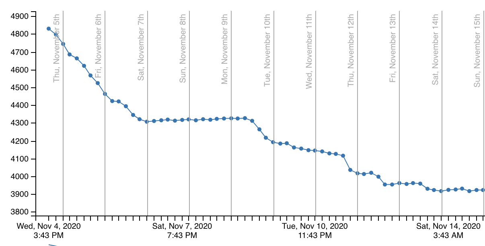
After focusing on housekeeping, we have also addressed several feature requests and community pull requests. This resulted in many new features and settings, some of the key highlights include:
- Word wrap in diff editor - Both inline and side-by-side views now support word wrapping.
- New extension bisect feature - Troubleshoot which extensions are causing issues in VS Code.
- Keyboard shortcuts editor improvements - Create a keybinding from the Command Palette.
- Undo file operations in Explorer - Undo or redo file operations in the Explorer.
- New Git commands and settings - Optimize your Version Control experience with new capabilities.
- Preview editor improvements - Turn off preview editors altogether, and try new interaction models.
- Sticky tab stops for spaces - Improved experience when indenting with spaces.
- Improved word-based suggestions - Display word-based suggestions from other open files.
- Terminal configuration support - Modify terminal settings from the terminal dropdown menu.
- New Remote Development resources - Check out the new video and Learn module.
Workbench
Preview editor improvements
We've made several updates to how we handle preview editors based on user feedback.
The workbench.editor.enablePreviewFromQuickOpen setting is now disabled by default, so that editors opened from Quick Open will no longer appear in preview mode.
When you start a code navigation (for example, with Go to Definition), the editor you start from will move out of preview mode and stay open, while the new editor will be in preview mode until you navigate further.
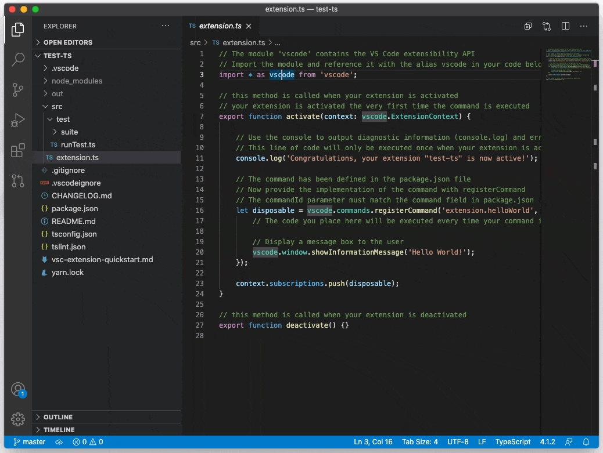
We changed all of our custom trees (the ones used in the Extensions or Git views, for example) to work more consistently like other built-in trees (such as the File Explorer). This means, the following interactions now apply to all of them:
- Double-click or mouse-middle-click to open in non-preview.
- Enter to open in non-preview mode (Space to open in preview mode).
Alt+Clickto open an editor to the side of the active one.
Note: If you are an extension author who is using our custom tree API, you get the benefit of this change as well. Make sure to use the vscode.open or vscode.diff commands for the TreeItem.command to get the new preview mode behavior.
A new menu item, Keep Editors Open, in the editor overflow menu allows you to quickly turn off preview editors altogether:
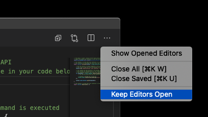
Restore previous session windows
A new value preserve for the existing window.restoreWindows setting lets you force that every window you had opened before closing VS Code is restored when you restart VS Code, even if VS Code is explicitly asked to open a specific folder or file. A common example is double-clicking on a file in your platform's file explorer to open it in VS Code or using the terminal to open a specific file or folder. Without the window.restoreWindows: preserve setting, VS Code will only open the file or folder as instructed, but not restore any other window.
Disable editor group splitting on drag & drop
A new setting workbench.editor.splitOnDragAndDrop prevents editor group splitting when using dragging and dropping editors. There is also a way to toggle this conditionally during the drag and drop operation by pressing and holding the Shift key (macOS) or Alt key (Windows, Linux).
Undo file operations in Explorer
The File Explorer now supports Undo and Redo for all file operations: delete, rename, copy, move, new file, and new folder. Make sure the focus is in the File Explorer and trigger the Undo or Redo commands and your last file operation will be undone or redone respectively. Keep in mind that we have separate undo stacks for the editor and the File Explorer, and we choose which one to undo based on focus.
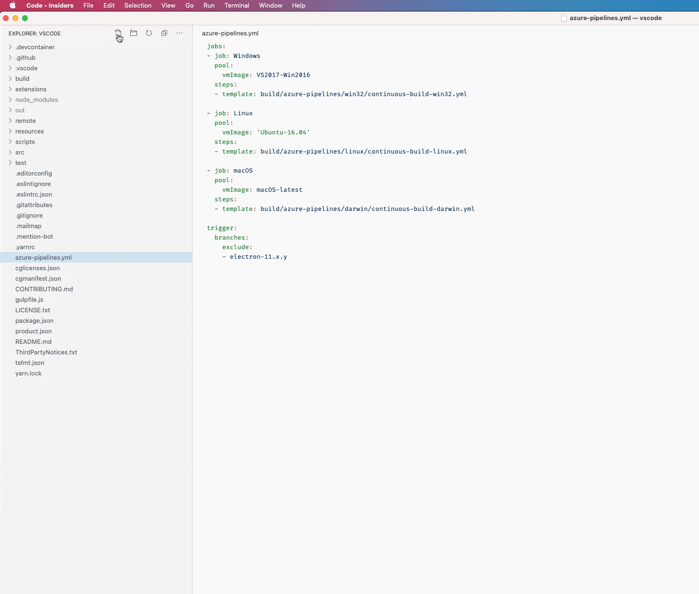
Progress for long running operations in Explorer
We now show progress in the File Explorer and Status bar for long running file operations (longer than 500 ms). There is also initial support for canceling long running operations. This should be helpful when copying large folders or downloading resources from remote locations.
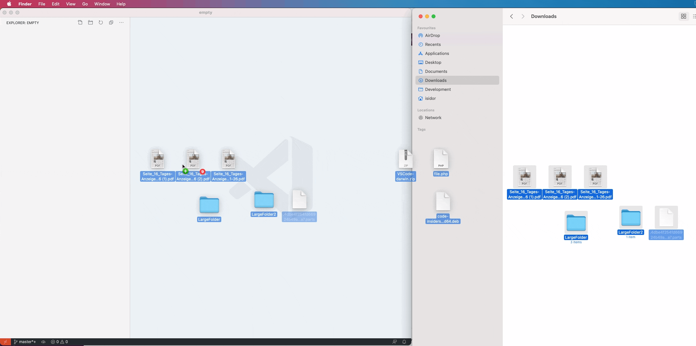
Open Editors sorting
There is a new setting explorer.openEditors.sortOrder to control the sort order in the OPEN EDITORS list.
The values are:
editorOrder- Editors are listed in the same order as editor tabs are shown (default).alphabetical- Editors are listed in alphabetical order inside each editor group.
The alphabetical sorting only has an effect on the Open Editors view - it will not "move tabs" in any way.
This can be helpful when you have lots of files open and you want to match up files that are associated (for example, hello.component.js and hello.component.html).
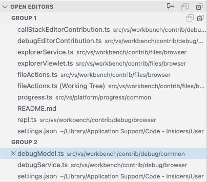
Accessible progress control
The workbench progress display has been made more accessible. VS Code sets the appropriate ARIA roles so that screen readers can report progress for all long running operations in VS Code. Most screen readers by default only announce progress if it is ongoing for more than 10 seconds.
Source Control changes show their parent folder path
Diff editors opened from the Source Control view will now reveal their file path (when tabs are disabled). Previously, only the filename would show, but now the parent folder appears if the before and after files are within the same folder.
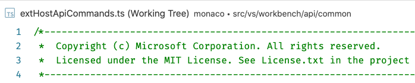
New proxy login dialog enabled by default
Our new proxy login dialog is now enabled by default. You can read our previous release notes for more details. The setting window.enableExperimentalProxyLoginDialog can be used to enable the old dialog, but we will remove this support in the near future. If you find an issue with the new login dialog, please let us know by filing an issue.
Improved terminal environment handling (Linux, macOS)
When you start VS Code on Linux or macOS for the first time via the dock or a launcher (and not the terminal), VS Code starts a background process to resolve your shell environment (as defined or changed by .bashrc or .zshrc). All environment variables detected are then used by VS Code so that starting from a terminal or the dock/launcher does not make any difference, which is important when debugging or executing tasks.
Unfortunately, VS Code does not open until this background process has executed. In order to not block startup for too long, VS Code will begin opening after 10 seconds. In this case, VS Code now informs you that it was unable to resolve the shell environment and offers a link to learn more:
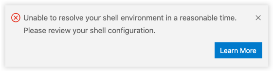
Similarly, VS Code now shows a warning after three seconds to indicate that VS Code startup was blocked resolving your shell environment:
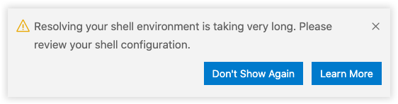
We are actively looking into changing our strategy to not block VS Code from starting while still resolving the shell environment in the background, but this will only be possible in future milestones.
Other noteworthy changes in this area are:
- You can now define and change environment variables from a terminal before launching a second window of VS Code, and these will properly overwrite the variables from the first launch, effectively allowing for per-window environment variables (for example, this enables you to change the Node.js version via a tool such as
nvmper window before starting). - Environment variables that are set from a terminal before launching a second window of VS Code are now preserved even when you switch folders in that second window.
Improved workbench overflow
Whenever there isn't enough space to fit all views inside the workbench, VS Code will now show scrollbars to pan the contents and let you get access to everything. This applies to several areas across the workbench such as the side bar, editor grid, and more.
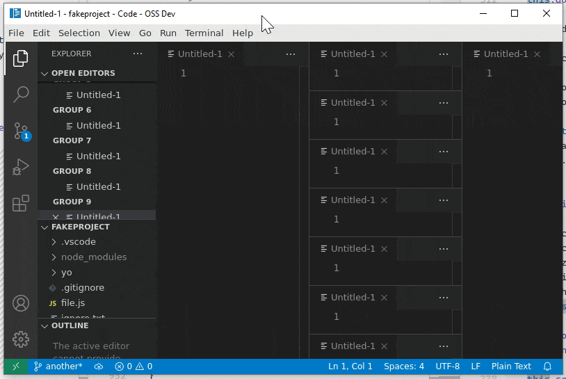
Sash hover border color
You can now customize a border hover color for sashes (sash.hoverBorder) across the workbench.
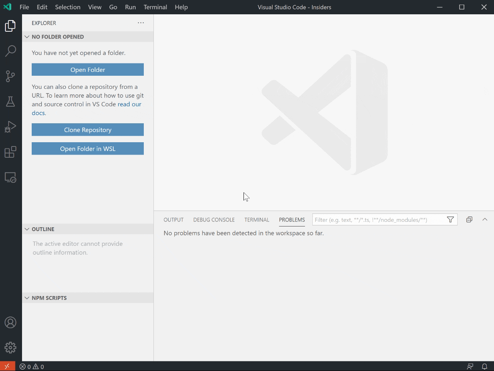
Tree: Expand mode
A new workbench.tree.expandMode setting lets you control how folders expand in trees: using a single or a double-click.
macOS Big Sur updates
Due to an Electron 9 issue, whenever you select Restart to Update, VS Code won't automatically restart, but simply exit. Until the next VS Code release, which should include Electron 11, you must manually relaunch VS Code when this happens. Read more in issue #109728.
Source Control
Preserve Source Control view state
The Source Control view state is now preserved across sessions. Collapsed tree nodes will stay collapsed even after exiting and relaunching VS Code.
Source Control gutter action
The new scm.diffDecorationsGutterAction setting lets you control what happens when you select the Source Control gutter decorations on the left side of the editor. The possible values are:
diff- Open the inline diff peek view on click (default).none- Disables any action.
Git: New commands
Several new Git commands have been added to the Command Palette:
- Git: Cherry Pick... - Cherry pick a specific commit to your branch.
- Git: Rename - Perform a git rename of the active file.
- Git: Push Tags - Push all local tags to the remote.
- Git: Checkout to (Detached)... - Perform a checkout in detached mode.
Git: New settings
Additionally, new Git settings have been added:
git.pruneOnFetch- Make VS Code rungit fetch --prunewhen fetching remote refs.git.ignoreSubmodules- You can now make sure VS Code ignores changes in submodule repositories, which is useful in large monorepos.git.openAfterClone- Control whether and how to open a folder after you cloned a git repository: on the current window, on a new window, when no folder is opened and by prompting the user.git.useCommitInputAsStashMessage- Enable VS Code to use the commit message in the source control input box as a stash message, when running Git: Stash.git.followTagsWhenSync- Follow tags when running Git: Sync.git.checkoutType- Control what refs are shown, and in what order, when you run the Git: Checkout... command.
Git: Prompt to save files before stashing
VS Code will now prompt you to save unsaved files whenever you attempt to stash changes.
Git: Better diff for deleted file merge conflicts
Deleted file merge conflicts now have an improved diff experience, showing the actual change in the file on the opposite branch to the deletion.
Git: Fetch on remote addition
VS Code will now run git fetch right after you add a remote, fetching all the refs from that remote.
Git: Checkout detached
It's now possible to checkout refs in detached mode from VS Code:
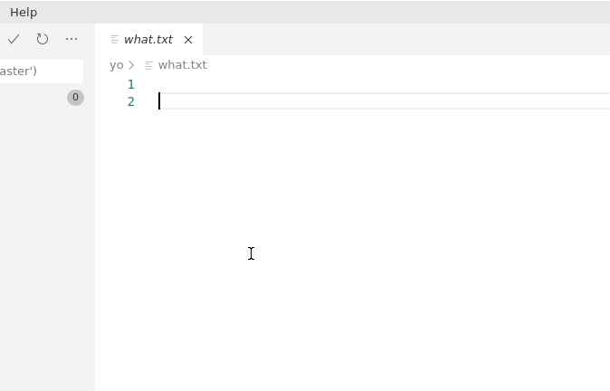
Git: Show command output on error
When a git command throws an error, you can now see the entire error message with a new Show Command Output option.
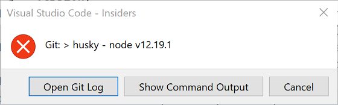
Git: New options for the git.api.getRemoteSources command
The git.api.getRemoteSources Git API command options now support an optional branch?: boolean property that will make Git prompt the user to pick a branch from a remote source, given there's support from the remote source provider.
Additionally, the command now supports a providerName?: string option that allows the caller to bypass the remote source choice by the user and use a specific provider directly.
Debugging
Breakpoints view: Conditions for exception breakpoints
VS Code now supports editing conditions for Exception breakpoints from the Breakpoints view using the Edit Condition context menu action.
For now, only the Mock Debug extension has (fake) Exception Breakpoint condition support, but soon other debug extensions will follow - such as the JavaScript debugger.
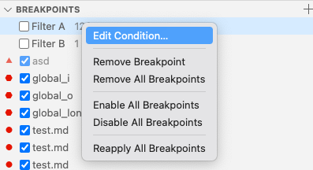
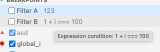
Exception area accessibility
The exception information area in the editor has been made more accessible. While debugging, once an exception is hit, VS Code will automatically move focus to the Exception area, which will make screen readers report the exception details and the stack frame.
It is now also possible to close the Exception area using the Escape key or the X button in the top right of the Exception area.
UI Improvements
Debugged line shown in overview ruler
The currently debugged line is now shown in the overview ruler on the right of the editor. For this decoration, we use the already present editor.stackFrameHighlightBackground color. In addition to this, VS Code shows the currently focused debugged line in the overview ruler using the editor.focusedStackFrameHighlightBackground color (focused debugged lines are non-top stack frame locations, which are manually selected in the Call Stack View).
Automatic debug configuration improvements
Previously, we've introduced a feature so that debug extensions can analyze the current project and offer debug configurations automatically. These debug configurations are dynamically created and so they do not show up in the launch.json configuration file. In this milestone, we are also preserving recently used automatic debug configurations across VS Code restarts (and reloads) to make the whole experience smoother. In the case that an automatic debug configuration is no longer valid after a restart, VS Code will ask you to pick a new automatic configuration from the same provider once debugging is started.
Debug Hover: help text/tip in the bottom to switch to normal hover
There is now help text on the bottom of the debug hover to make the Alt switch to editor language hover while debugging more discoverable. As a reminder, when you are debugging, the debug hover takes precedence over the language hover, making it impossible to see the language hover. You can switch from the debug hover back to the language hover by holding down the Alt modifier key. As long as Alt is pressed, the language hover is shown instead of the debug hover. This makes it much easier to read hovers like Javadoc descriptions while debugging.
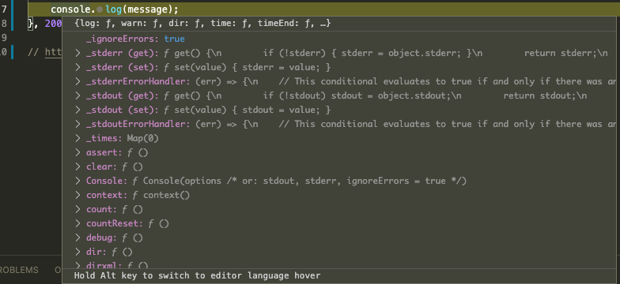
Debug Console: collapse identical lines
The Debug Console now collapses identical output and shows the number of occurrences. This feature makes it much easier to grasp repetitive program output.
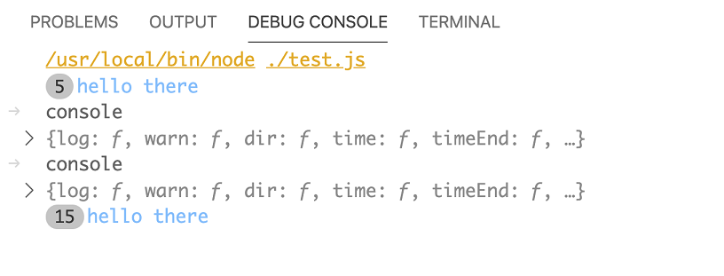
New variables for launch.json and tasks.json
The following new variables have been introduced:
${fileWorkspaceFolder}- Resolves to the workspace folder path of the file open in the active VS Code editor.${fileDirnameBasename}- Resolves to name of the folder that the file open in the active VS Code editor is in.${pathSeparator}- Resolves to the character used by the operating system to separate components in file paths.
serverReadyAction: launch other debug config by name
The serverReadyAction has historically been able to launch a browser or Chrome debugging by matching a URL. This release adds a new option to launch another arbitrary configuration by name. For example, in your launch.json you can specify:
"serverReadyAction": {
"action": "startDebugging",
"pattern": "listening on port ([0-9]+)",
"name": "Launch Browser"
}
This allows you to pass additional options in standard Chrome debug configurations and use other debuggers with the serverReadyAction.
Temporarily disable Auto Attach
Auto attach can now be disabled temporarily via the Auto Attach item in the Status bar, or via the Debug: Toggle Auto Attach command. Disabling auto attach in this way applies only to the current window and does not require restarting your terminal. It can be re-enabled in the same way.
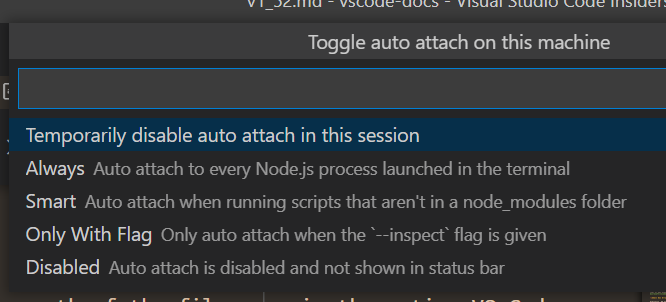
JavaScript debugger
A complete list of changes can be found in the debugger's changelog.
Breakpoint Diagnostic Tool
There is a new tool that is designed to help troubleshoot build or configuration issues that prevent debugging or prevent breakpoints from binding. To use it, run the Debug: Create Diagnostic Information for Current Session command while a debug session is running. In a later VS Code version, a hint for this diagnostic tool will appear automatically when appropriate.
Setting for Default Executable Locations
There is a user setting, debug.javascript.defaultRuntimeExecutable, which allows you to specify the default locations of Node.js or Chrome binaries. For example, { "pwa-chrome": "dev" } will use the "dev" build of Chrome whenever you debug with Chrome-type configurations.
Note that to use this new option, you want to make sure that your launch configuration is pwa-node instead of node, or pwa-chrome instead of Chrome.
Tasks
npm
The built-in npm extension's setting npm.packageManager has a new default value: auto. The auto value will cause the package manager to be automatically detected based the .lock files and which package manager was used to install dependencies in the workspace. When there are multiple .lock files detected, a package manager will still be chosen, and a warning will indicate that there was a conflict.
Remove recent tasks
The tasks Quick Pick has always had a Recent Tasks section at the top. Since this is a valuable location, you can now better curate your recent tasks by removing them from the Quick Pick with the Remove Recently Used Task button on the right.
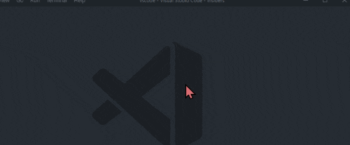
Extensions
In this milestone, we added a number of improvements to the Extensions view and extension details pages.
Extensions views are now refreshed automatically. For example, an extension is shown in the Extensions: Installed list immediately after installing the extension. You can also refresh the view manually using the refresh button in the title bar.
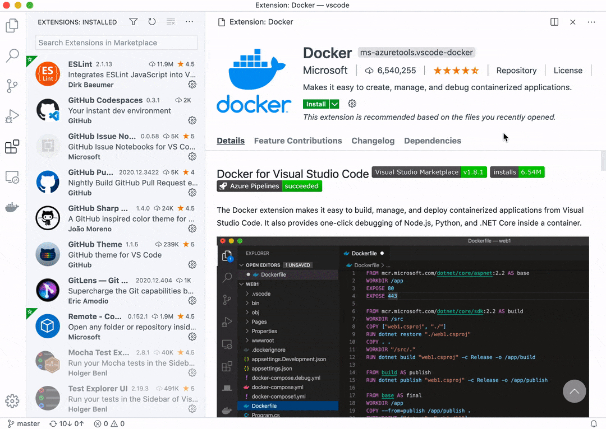
Theme: GitHub Light
An extension's details page now shows a context menu with all of the actions for an extension, like in the Extensions view.
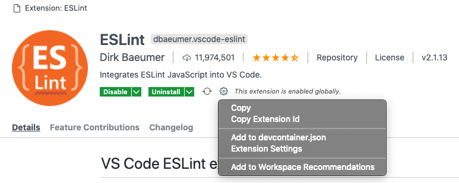
Theme: GitHub Light
The Feature Contributions tab in an extension's details page now shows the Activation Events for an extension.
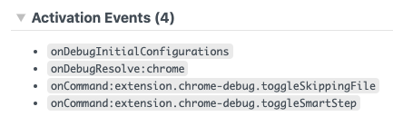
Theme: GitHub Light
You can now disable an extension and its dependents together. There is a notification with a Disable All action when you try to disable an extension that has dependencies.
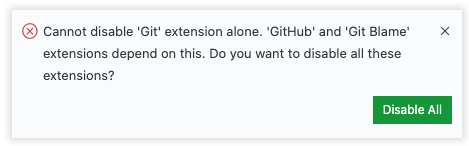
Theme: GitHub Light
You can add or remove an extension from workspace recommendations using the Add to Workspace Recommendations or Remove from Workspace Recommendations actions available in an extension's context menu in the Extensions view.
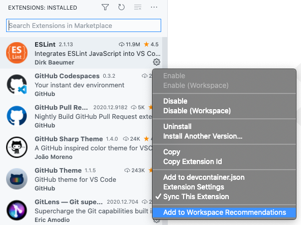
Theme: GitHub Light
Extension recommendation notifications now show the install dropdown action when Settings Sync is enabled, just like in the Extensions view.
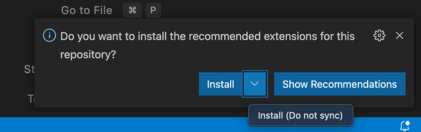
We simplified configuring extension recommendations by deprecating the extensions.showRecommendationsOnlyOnDemand setting. You can now use the extensions.ignoreRecommendations setting to control extension recommendation notifications, and the Extensions view's visibility actions to hide the recommendations by default.
Troubleshooting: Extension bisect
The true power of VS Code is its extensions: theme extensions add pretty colors and icons, language extensions provide IntelliSense and enable code navigation, debugger extensions enable you to drill into bugs. Sometimes it isn't obvious if an issue is caused by an extension, and if so, by which extension. Until today, you needed to disable all extensions and then one by one re-enable extensions to find a problematic extension. This process is now getting easy with a new feature called extension bisect. It uses the binary search algorithm to quickly identify an extension that causes trouble. In essence, it disables half your extensions and asks you to check for the issue you were seeing. If the issue is gone, the bad extension must have been in the list of disabled extensions, not in the list of currently enabled extensions. This process is repeated until only a single extension is left.
You can start extension bisect via the Help: Start Extension Bisect command from the Command Palette (⇧⌘P (Windows, Linux Ctrl+Shift+P)). It then guides you through the process of repeatedly disabling and re-enabling extensions. After each reload, you will be prompted to confirm if the issue is still there.
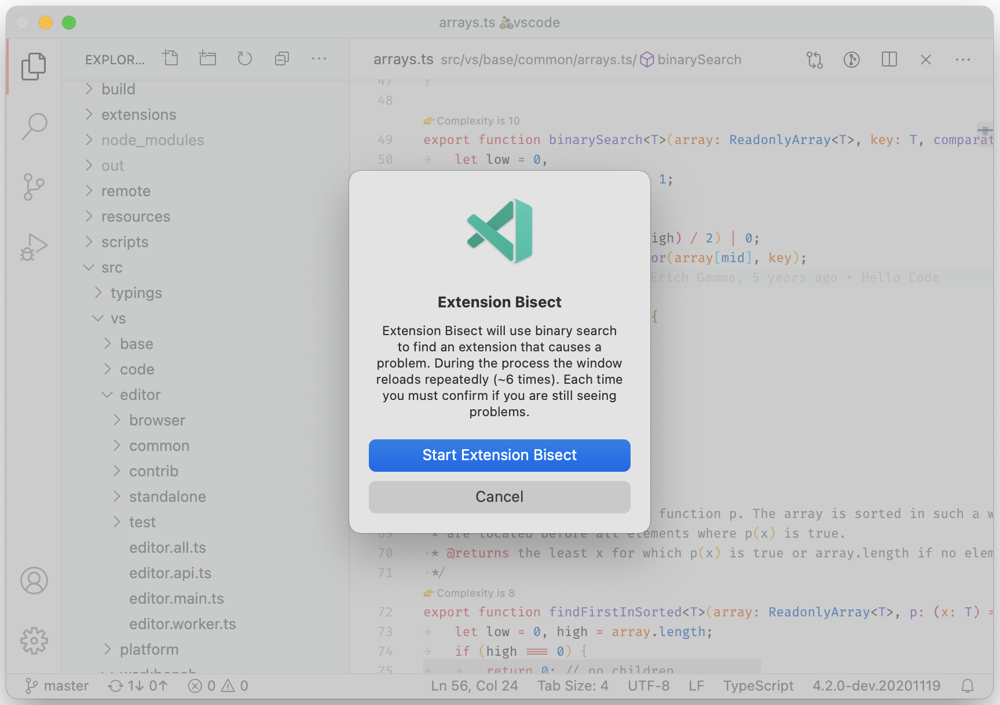
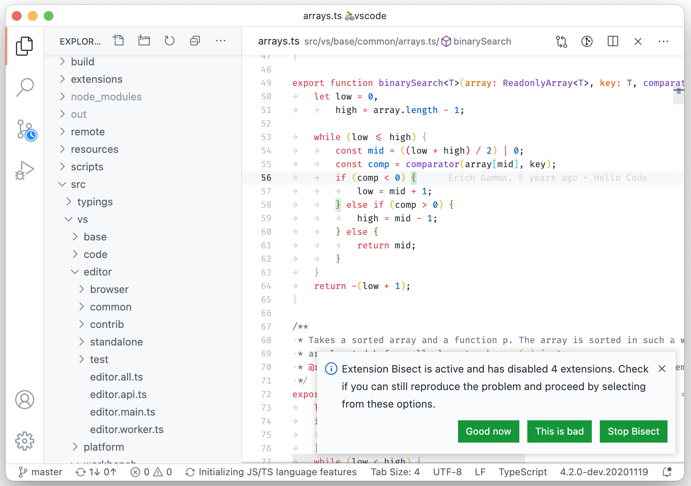
Extension bisect will repeatedly ask you to check if the issue is reproducing or not. You can always abort via Stop Bisect and if you dismiss the bisect notification, you can continue via the Help: Continue Extension Bisect command.
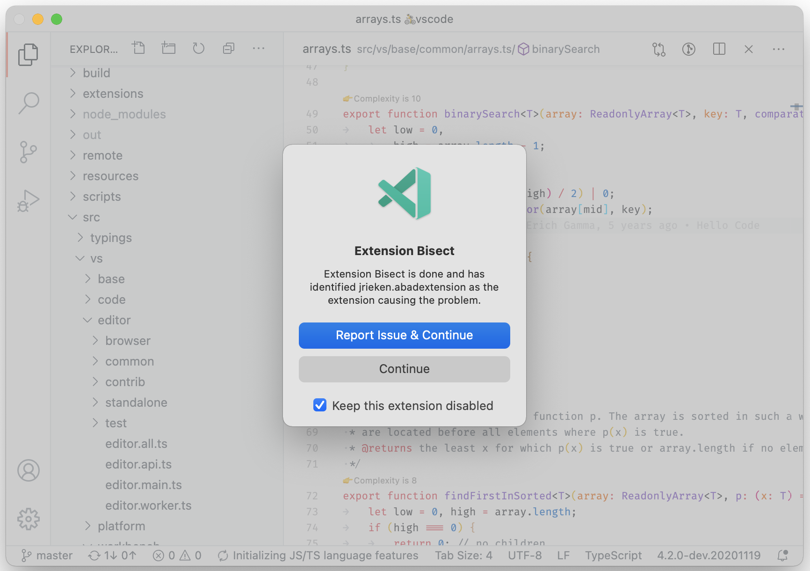
When the extension bisect process is finished, you are asked to file an issue against the extension. You can also keep the extension disabled from here.
Keyboard Shortcuts editor
We've added several improvements to the Keyboard Shortcuts editor in this milestone.
You can now configure a keybinding for a command from the Command Palette, via the Configure Keybinding gear button on the right.
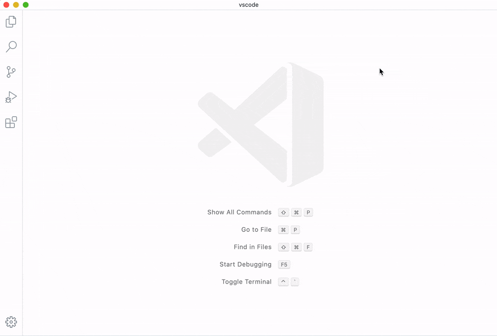
Theme: GitHub Light
You can add several keybindings to a command from the Keyboard Shortcuts editor.
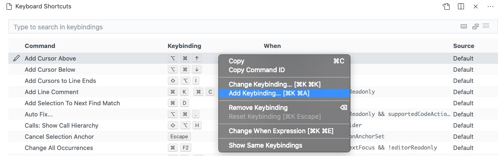
Theme: GitHub Light
You can also now filter by a particular Keyboard Shortcut editor column from search input:
@command:commandId- Filters by command ID. For example,@command:workbench.action.showCommands.@keybinding:keybinding- Filters by keybinding. For example,@keybinding:f1.@source:user|default|extension- Filters by source.
You can navigate search history in the Keyboard Shortcuts editor using the Up and Down arrows.
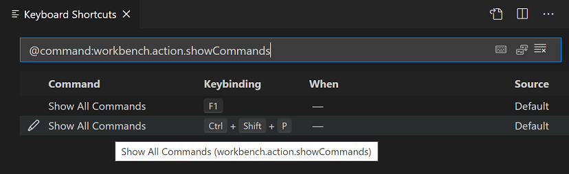
IntelliSense
Word based suggestions from other documents
VS Code supports simple word-based suggestions. They are useful when a language service isn't available or when a language service cannot compute results, like when typing inside comments. With this release, VS Code can now be configured to suggest words from other open files. Use the editor.wordBasedSuggestionsMode setting with allDocuments to suggest words from all open files, use matchingDocuments to suggest words from open files of the same language (default), and use currentDocument to only suggest words from the current file.
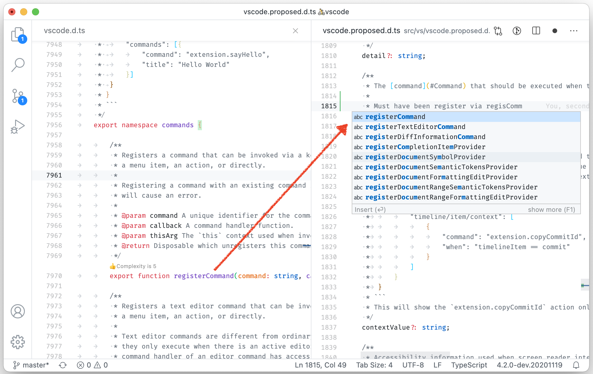
Hide inline details
Suggestions in VS Code have details that are displayed in a separate flyout beside the suggestion. The details view can be closed and then a preview of the details will be shown inline with the suggestions. Showing the details inline with the suggestion can take away too much space and so can now be disabled via a new boolean setting, editor.suggest.showInlineDetails.
TypeScript suggestions show path
TypeScript can provide completions that also add an import statement. However, when there are multiple symbols with the same name, it is hard to pick the right completion. This release makes this simpler because paths of auto-import completions are shown with the label.
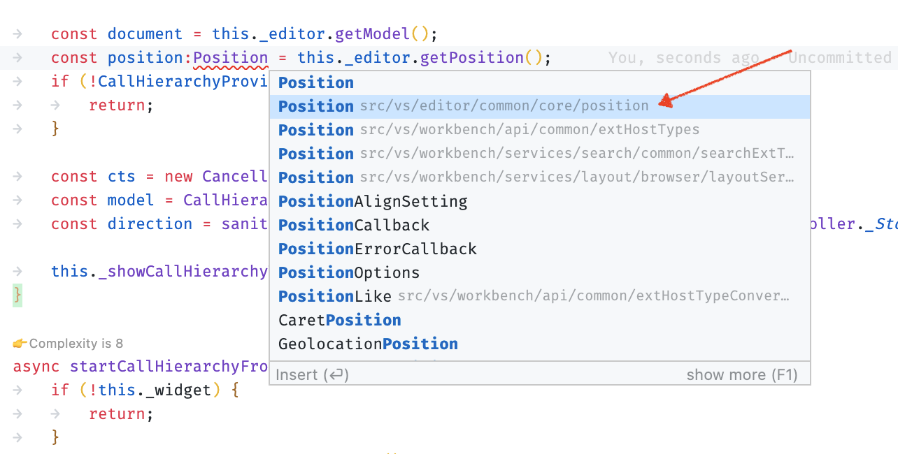
Customize CodeLens
You can now configure the font family and size of CodeLens items.
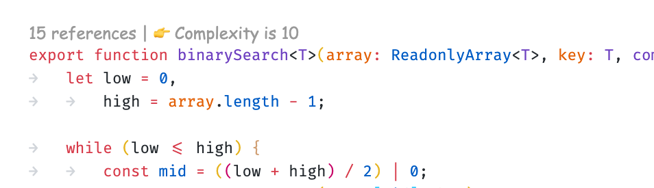
In the screen capture above, font and size are customized using these two settings:
"editor.codeLensFontFamily": "Comic Sans MS",
"editor.codeLensFontSize": 12,
Editor
Sticky tab stops when indenting with spaces
If you prefer to indent your code with spaces, there is a new setting called editor.stickyTabStops, which makes VS Code treat cursor movements in leading spaces similar to tabs.
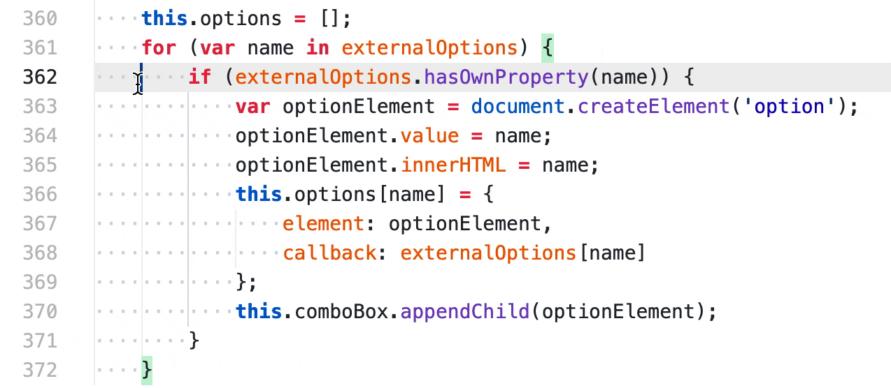
Delete Word command
The existing delete word actions will either delete from the current cursor position to the start of the word (for example Ctrl+Backspace on Windows/Linux) or to the end of the word (Ctrl+Delete on Windows/Linux). There is now a new command that will delete the entire word under the cursor named Delete Word.
Word wrap in the diff editor
Both the side-by-side and the inline views of the diff editor now support word wrapping. In general, the diff editor will respect the editor settings related to word wrapping. In the case of Markdown files, which are word wrapped by default, the diff editor will also word wrap them:
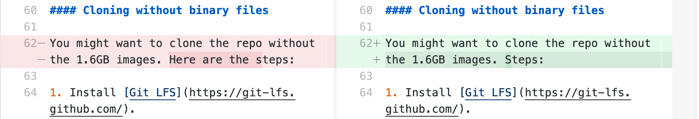
If you would like the diff editor to either never wrap or always wrap, you can use the new diffEditor.wordWrap setting and configure it "on" or "off" (the default is "inherit", which means the diff editor inherits the editor wrapping settings).
Snippets
Hide extension snippet
Snippets contributed by extensions can now be hidden from IntelliSense. This feature is available from the Insert Snippet picker when you run Insert Snippet. Find an extension snippet that you want to hide, and select the eye-icon on the right.

Hidden snippets aren't showing in IntelliSense but can still be used via Insert Snippet. Last, when using Settings Sync, the hidden snippet preferences will be synchronized across your devices.
Snippets without prefix
When authoring snippets, you can now omit the prefix property. Snippets without a prefix don't show in IntelliSense but can be used via Insert Snippet.
Integrated Terminal
Terminal configuration support
You can now modify terminal settings by selecting Configure Terminal Settings in the terminal dropdown menu.

Keybindings management
By default, keybindings are dispatched to the workbench instead of the terminal as specified in the terminal.integrated.commandsToSkipShell setting. A new notification informs the user when they have entered a keybinding corresponding to one of these commands and provides the option to configure the relevant settings.
To send most keybindings to the terminal instead of the workbench, you can set terminal.integrated.sendKeybindingsToShell.

Languages
Markdown inline smart select
Expand and shrink selection in Markdown documents using the following commands:
- Expand: ⌃⇧⌘→ (Windows, Linux Shift+Alt+Right)
- Shrink: ⌃⇧⌘← (Windows, Linux Shift+Alt+Left)
Selection applies to italics, bold, inline code blocks, and links.

TypeScript 4.1
This release of VS Code includes TypeScript 4.1.2. This major TypeScript update brings support for a number of new language features—including template literal types and support for [React 17's factories—as improving language tooling for JavaScript and TypeScript. As always, it also includes a number of bug fixes.
You can read more about TypeScript 4.1 on the TypeScript Blog.
Initial support for JSDoc @see tags
JSDoc @see tags let you reference other functions and classes in your JSDoc comments. The example below shows the crash function referencing the WrappedError class from another file:
// @filename: somewhere.ts
export class WrappedError extends Error { ... }
// @filename: ace.ts
import { WrappedError } from './somewhere'
/**
* @see {WrappedError}
*/
function crash(kind) {
throw new WrappedError(kind);
}
VS Code will now include basic @see references while performing renames. You can also run Go to Definition on the @see tag's content and @see tags will also show up in the list of references.
We plan to continue improving support for @see tags in future releases.
New settings for IntelliSense behavior and type checking
There are two new settings that control IntelliSense and type checking behavior in JavaScript and TypeScript files that are not part of an explicit tsconfig or jsconfig project.
-
The
js/ts.implicitProjectConfig.strictNullCheckssetting enables strict null checks. It isfalseby default.If you are working in TypeScript, you definitely want to enable strict null checks as it can catch many common programming mistakes.
Strict null checks are also helpful while working in JavaScript. When strict null checks are enabled, hover and IntelliSense information will show which types can
undefinedandnull. If you enable type checking in your JavaScript, VS Code can also use strict null checks to catch some common programming mistakes. -
The
js/ts.implicitProjectConfig.strictFunctionTypessetting enables strict function types. It istrueby default.Strict function types are more difficult to explain but also generally improve IntelliSense and can catch some programming mistakes.
Keep in mind that these settings are both overridden if a file is part of a jsconfig or tsconfig project.
Renaming the other implicit JS/TS project settings
The other implicit project settings for JavaScript and TypeScript have been renamed to make them more accurate:
javascript.implicitProjectConfig.checkJs->js/ts.implicitProjectConfig.checkJsjavascript.implicitProjectConfig.experimentalDecorators->js/ts.implicitProjectConfig.experimentalDecorators
These settings were renamed because they apply to both JavaScript and TypeScript files that are not part of a jsconfig or tsconfig project. The previous setting names suggested they only applied to JavaScript files.
HTML
New formatter settings
The HTML extension uses JSBeautify as the formatter. The update to the latest version of JSBeautify (1.13) brings some new formatter settings:
html.format.wrapAttributesIndentSize: Alignment size when usingforce alignedandaligned multipleinhtml.format.wrapAttributesornullto use the default indent size.html.format.templating: Honor django, erb, handlebars, and php templating language tags.html.format.unformattedContentDelimiter: Keep text content together between this string.
The last setting lets you set a tag to mark areas that should not be formatted:
"html.format.unformattedContentDelimiter": "<!-- DoNotFormat -->"

New setting name for onTypeRename
The On Type Rename feature for editing a tag when its matching closing tag is modified is now called linked editing. The command to enable linked editing is Start Linked Editing (⇧⌘F2 (Windows, Linux Ctrl+Shift+F2)) and Escape disables linked editing mode.
The setting to enable it is now:
"editor.linkedEditing": true
Contributions to extensions
Remote Development
Work continues on the Remote Development extensions, which allow you to use a container, remote machine, or the Windows Subsystem for Linux (WSL) as a full-featured development environment.
Feature highlights in 1.52 include:
- Automatic port forwarding on Linux remotes.
- New command to install remote extensions locally.
- You can now select a branch when you open a repository in a container.
- Server startup performance improvements by installing extensions in the background.
You can learn about new extension features and bug fixes in the Remote Development release notes.
Notebooks
The VS Code team is continuing work on native support for Notebooks and improving its UX and performance.
Improve large text output rendering
The native Notebook editor will now truncate the output if its content is too large to ensure the UI is always responsive. You can still open the full raw content of the output in a text editor.

Extension authoring
File Decoration API
The FileDecorationProvider API is now final and can be used by any extension. With this API ambient information can be added to files, for the SCM and error decorations that show in the explorer use this API.
Undoing resource changes
Explorer operations like create file, rename file or delete file raise events, which allow participation, for example, onWillCreateFiles, onWillRenameFiles, or onWillDeleteFiles. This release adds support for undoing such explorer operations and you should know that the aforementioned events are not fired when undoing an operation.
New theme colors
statusBarItem.errorBackground: Status bar error items background color. Error items stand out from other status bar entries to indicate error conditions.statusBarItem.errorForeground: Status bar error items foreground color. Error items stand out from other status bar entries to indicate error conditions.
Error background colors
Theme authors can now leverage new theme colors for errors in the editor. Editor errors, warnings, and infos can now be styled via:
editorError.backgroundeditorWarning.backgroundeditorInfo.background

Updated Codicons
We've added the following new icons to our codicon library:
check-allcircle-large-filledcircle-large-outlinepass-filledpinned-dirty

Support for codicons for view containers & views
You can now use codicons as icons for view containers and views. Example:
"views": {
"explorer": [
{
"id": "npm",
"name": "NPM Scripts",
"icon": "$(code)",
"visibility": "hidden"
}
]
}
See the icon listing for a list of available icons.
Linked editing range provider
What was formerly known as OnTypeRenameProvider is now a public API as LinkedEditingRangeProvider.
For a given position in a document, a LinkedEditingRangeProvider links ranges with the same content. A change to one of the ranges can be applied to all other ranges.
This can be seen in action in HTML. When editing the name of an opening tag, the closing tag is automatically updated as well.
FoldingRangeProvider.onDidChangeFoldingRanges
FoldingRangeProvider.onDidChangeFoldingRanges has been made a public API. It is an optional event to signal that the folding ranges from a provider have changed.
Open Keyboard Shortcuts editor with query filter
Extensions can now pass query text while opening the Keyboard Shortcuts editor using the command workbench.action.openGlobalKeybindings.
vscode.commands.executeCommand('workbench.action.openGlobalKeybindings', 'query');
fs.isWritableFileSystem
The new fs.isWritableFileSystem API lets you check if a given file system supports writing. For example, to check if a document with a url of example:/path/to/file is on a writeable file system:
switch (vscode.fs.isWritableFileSystem('example')) {
case true:
// The `example` filesystem supports writing.
// Keep in mind the permissions or other issues may still prevent
// a file from being written.
break;
case false:
// The `example` filesystem does not support writing (it is readonly).
break;
case undefined:
// VS Code does not know about the `example` filesystem
break;
}
Custom editors can use fs.isWritableFileSystem to determine if they show a readonly UI.
Markdown Tree tooltip API
The API for using Markdown for tooltip on TreeItem has been finalized. You can set the tooltip to a Markdown string when you create the TreeItem, or, if your Markdown might take additional time to compute, you can use the new TreeDataProvider.resolveTreeItem to set the tooltip.

TreeItem highlights API
The long awaited TreeItemLabel API has been finalized. This API can be used to set highlights on the label of a TreeItem. You can see it in action in the References view.

listDoubleSelection and listMultiSelection
Using the context values listDoubleSelection and listMultiSelection for command enablement in contributed tree views now works.
View welcome content button enablement
You can now set an enablement context clause for view welcome content sections.

Proposed extension APIs
Every milestone comes with new proposed APIs and extension authors can try them out. As always, we want your feedback. This is what you have to do to try out a proposed API:
- You must use Insiders because proposed APIs change frequently.
- You must have this line in the
package.jsonfile of your extension:"enableProposedApi": true. - Copy the latest version of the vscode.proposed.d.ts file into your project's source location.
You cannot publish an extension that uses a proposed API. There may be breaking changes in the next release and we never want to break existing extensions.
Status bar entry background color API
We propose a new property backgroundColor for StatusBarItem to set the background color of a Status bar entry. Currently only statusBarItem.errorBackground is supported to avoid the Status bar looking too colorful. We may expand this support to more colors in the future.
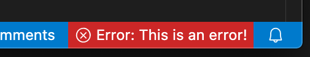
The use case for this new API is to enable extensions to indicate error conditions in the Status bar. For example, the ESLint extension may decide to use this color to alert the user that ESLint has not yet been enabled for a workspace.
More themeable icons
Work has resumed on the product icon themes. Product icon theme is a proposed feature that allows you to style VS Code with a custom set of icons. It works for all icons in the built-in views, as well as all extensions that use icons from the Codicon library. Product icon theme will be made public in the next milestone.
Many more icons names have been added, in particular for the debug, extensions, and terminal views, as well as the settings and notebook editors.
Check out the updated icon listing.
Removal of proposed logging API
A proposal for a logging API, LogLevel and onDidChangeLogLevel, existed around a year ago, and has now been removed. Extensions can use the output channel API for logging, or, when using a custom logger, use ExtensionContext#logUri.
Initial addition of proposed testing API
We are investigating testing in VS Code, and the first version of the API is now present in vscode.proposed.d.ts. Please read the linked issue for additional context, and participate if you have input to give. We expect to ship the provider portion of the API significantly earlier than the observer portion.
New context key operators
<, <=, >, or >= can now be used for context key expressions. Here is an example for contributing a command that appears only when having two or more workspace folders opened:
"contributes": {
"menus": {
...
"when": "workspaceFolderCount >= 2"
...
}
}
Language Server Protocol
The feature set for the 3.16 version of the Language Server Protocol has been finalized and is available on the LSP protocol site. The major highlights of the 3.16 version are:
- Semantic tokens
- Call hierarchy
- Linked editing
- Change Annotations
- LSIF Monikers
- File Operation Events
The detailed change log contains all the minor improvements to existing requests as well.
Debug Adapter Protocol
Support for conditional exceptions
In this milestone, the conditional exception proposal from September 2020 has been finalized and is now part of the version 1.43 of the Debug Adapter Protocol (DAP).
The protocol addition extends the setExceptionBreakpoints request with a new optional filterOptions property for setting the exception filters and their conditions. A debug adapter can announce that it supports the conditional exceptions feature via the supportsExceptionFilterOptions capability.
Clarified semantics of StackTraceResponse.totalFrames
The description of the supportsDelayedStackTraceLoading capability in the Debug Adapter Protocol seems to suggest that in order for delayed stack frame loading to work, the adapter must populate the totalFrames field of the StackTraceResponse with the correct number of available stack frames. However, for some debuggers or runtimes, this value is not easy to compute which makes it expensive to support delayed stack frame loading.
Since the total number of frames is never surfaced in the UI, we have clarified the original - somewhat lacking - semantics description of totalFrames: a debug adapter is now free to provide a large (incorrect) value for totalFrames and a client should be prepared to receive fewer frames than requested, and use this as an indication that the end of the stack has been reached.
Clarified semantics of RunInTerminalRequestArguments.cwd
Since the cwd property ("current working directory") of the runInTerminal request is not optional, it is not possible omit the property in order to express the "don't care" case. For example if a debug adapter knows that the "cwd" is already correct and that there is no need to have the client generate a "change directory" command, the DAP specification does not describe how to achieve this.
To address this shortcoming, we have clarified the DAP specification by adding that a client is only expected to execute a change directory command if the cwd property contains a non-empty path.
Engineering
Sandbox and context isolation enabled for issue reporter and process explorer
To get more feedback from enabling Electron's sandbox and context isolation, we pushed to enable it for our Process Explorer and Issue Reporter windows. This configuration will eventually be the default also for the main VS Code window:
sandboxenabledcontextIsolationenabled- resources are served from a custom
vscode-filescheme (and notfile)
Secure supply chain for NPM dependencies
We've improved our NPM dependency supply chain by leveraging source scanning and testing services, in order to increase our build pipeline security and reliability.
Linux ARM Repositories
VS Code for ARM architectures (aarch64 and armhf) is now published in the following Linux repositories:
New commands
| Key | Command | Command ID |
|---|---|---|
| Focus Primary Side in Diff Editor | workbench.action.compareEditor.focusPrimarySide |
|
| Focus Secondary Side in Diff Editor | workbench.action.compareEditor.focusSecondarySide |
|
| Focus Other Side in Diff Editor | workbench.action.compareEditor.focusOtherSide |
Documentation
Remote Development
There are several new ways to learn about VS Code Remote Development:
- Check out the "Tabs versus Spaces" video discussing VS Code Remote Development.
- Or try out the step-by-step Learn module covering how to Use a Docker container as a development environment.

GitHub integration
- Check out our new Learn module on how to best leverage the editor's GitHub integration with this Introduction to GitHub in Visual Studio Code.

How we make VS Code in the open
Watch the recording of developers Alex Ross and Benjamin Pasero's session at GitHub Universe How we make VS Code in the open to learn how our team builds VS Code as open source and collaborates with the community on GitHub.
VS Code on Chromebooks
Did you know you can run VS Code on a Chromebook? We think this is a great option for students and beginning programmers. Learn how to set up VS Code on Chrome OS (via Crostini) with our Learning with VS Code on Chromebook blog post, which includes instructions on getting started with coding using JavaScript and Python.
Notable fixes
- 39543: Highlight matched words in the overview ruler of split json settings editor.
- 67905: Install multiple extension vsix files simultaneously
- 83187: Env vars from one configuration bleed into another.
- 88703: Errors on fields with URI format not reported in Settings UI
- 97202: ${config:
} variables fail to resolve in multi-root workspace launch configurations. - 98041: Emmet ignores selection on Evaluate Math Expression
- 107320: Theme selector should not appear when installing an extension that contains a main.
- 107461: History on Debug Console not preserved
- 109111: Debug Console doesn't respect user settings.
- 110077: Data breakpoints are not showing up in Breakpoints view.
- 110426: Support
--diffparameter with reading from stdin - 110738: Allow extensions to set the editor label for custom file system schemes
- 110775: The Delete Permanently option is gone for Shift Right Clicking
- 110854: Support readonly changes of file system providers in opened editors
- 110905: CLI: Do not reach to Marketplace if extension is already installed unless forced
Thank you
Last but certainly not least, a big Thank You to the following people who contributed this month to VS Code:
Contributions to our issue tracking:
- John Murray (@gjsjohnmurray)
- Simon Chan (@yume-chan)
- Andrii Dieiev (@IllusionMH)
- ArturoDent (@ArturoDent)
- Alexander (@usernamehw)
Contributions to vscode:
- Aasim Khan (@aasimkhan30)
- Fixing ListWidget escape button behavior PR #110760
- Added outline offset to checkbox to make focus visible. PR #110038
- @AE1020: Make Clicking in Scrollbars Move By Page PR #104923
- @alisonnoyes: Quiet Light theme diff syntax highlighting PR #107926
- Andrew Casey (@amcasey): Expose TS server tracing PR #110534
- Andrew Branch (@andrewbranch): [typescript-language-features] Update importModuleSpecifierPreference values PR #110536
- @apogeeoak: Prevent error when reopening markdown preview. (#_107205) PR #111449
- Jonathan Belcher (@belcherj): Fix composition logic for Firefox PR #106873
- @BTNDev: updated javascript for in snippet PR #111062
- Borja Zarco (@bzarco): Don't fail when resolving config variables without a
folderUri. PR #97203 - @chanmaoooo: add 'deleteWordEntire' command PR #109511
- chenjigeng (@chenjigeng): Fixed Hover style incorrect when writing javascript in HTML PR #111110
- @dataleaky: Update package.json PR #111661
- Devansh Jethmalani (@devanshj): feat(quickinput): support codicons in prompt PR #102898
- Aadhish Sriram S (@dfireBird): feat: detect default stash message microsoft#106907 PR #107074
- @digeff: Added extensibility points for searchView/context PR #109049
- Nathaniel Palmer (@diminutivesloop): Offer to show git command output on failure PR #95354
- Dor Mesica (@dormesica): Added a warning before dropping a stash. PR #94267
- David Sanders (@dsanders11)
- Fix error message PR #111269
- Add vscode.Uri to types for vscode.RelativePattern's base parameter PR #111155
- Use label for "Follow link" command's tooltip PR #110917
- clarify effect of command enablement PR #110423
- Use Array.flat() PR #110189
- Ikko Ashimine (@eltociear): Fixed typo 'sequece' to 'sequence' PR #109643
- Erik Krogh Kristensen (@erik-krogh): fix catastrophic backtracking when parsing markdown files PR #109964
- Jakub Piskiewicz (@eXotech-code): Added a setting to open cloned repository automatically. PR #94369
- Fabio Zadrozny (@fabioz): Docs for FileSystemWatcher limitations (#_60813) PR #110858
- Himanshu Kapoor (@fleon): Allow monaco-editor to work propertly with Jest PR #109833
- Ben Curtis (@Fmstrat): add ignoreSubmodules option PR #88772
- John Murray (@gjsjohnmurray)
- fix #109733 prevent double '(read-only)' suffix in titlebar PR #109736
- fix #106487 implement 'enablement' clause for viewsWelcome contribution's buttons PR #107705
- Guillaume Lachance (@glachancecmaisonneuve): Windows explorer icons PR #86283
- Hung-Wei Hung (@hunghw): Create empty commit with changed files #107753 PR #107958
- Dhruva Srinivas (@IQUBE-X): Add Definition list to Markdown Snippets PR #110026
- Jean Pierre (@jeanp413)
- Fixes extension editor glitches while quickly navigating navbar PR #110370
- Fixes terminal lags while scrollling when printing long line PR #110213
- Better diff for deleted file in merge conflict PR #91245
- Fixes source control remember tree collapsed state PR #89313
- Jessica Petty (@jepetty): Add node task to fix broken Rich Nav builds PR #110762
- Josias (@justjosias): Typo hightlight -> highlight PR #108451
- @KapitanOczywisty: Ignore LineDecoration order when comparing PR #108379
- Ken Aoki (@kena0ki): Update xterm.css PR #109850
- Wenlu Wang (@Kingwl)
- Oliver Larsson (@LarssonOliver): git.pruneOnFetch setting implemented PR #89249
- Jiaxun Wei (@LeuisKen): cache OpenURLOptions in ExtensionUrlBootstrapHandler PR #110725
- Jade (@lf-): Explicit fontLigatures description PR #109987
- Logan Rosen (@loganrosen): Mark .ember-cli as jsonc instead of json PR #110541
- Mohammed Al-Dahleh (@maldahleh): #109255 - Add encoding description to settings "File: Encoding" dropdown PR #109551
- Mathias Rasmussen (@mathiasvr): Allow git amend message only PR #91838
- MD Asif Hasan (@mdasifhasan): Fix fetchOnPull behavior for Pull and Sync PR #99324
- Seth Fitzsimmons (@mojodna): Typo: Uncommited → Uncommitted PR #109119
- Nicholas Rayburn (@nrayburn-tech): Add dirSep variable for launch.json PR #105887
- oli (@olivercoad): Handle conflicting multi-char auto closing pairs PR #110094
- @Pikachu920: Prevent unwanted concatenation of "null" to feedback URL PR #111325
- Pablo Sebastian Greco (@psgreco)
- More cleanup for armhfp and aarch64 rpm hardcoded dependencies PR #111253
- Fix hardcoded rpm dependencies for armv7hl and aarch64 PR #111198
- Rotem Bar (@rotem-bar): feat(extensions): added an option to disable related dependencies when disabling an extension with enabled dependencies PR #104997
- Andreas Ziegler (@rupran): scmViewPane: do not render whitespace in commit message input field PR #107913
- Dmitry Sharshakov (@sh7dm): Git: ask to save unsaved files before stashing PR #94358
- Shivang Tripathi (@shivangg): feat: Autodetect npm.packageManager #102050 PR #102494
- Shunsuke Iwamoto (@shskwmt): Fix #93946. Remove focus when scrolling. PR #94280
- Emanuel Tesař (@Siegrift): Enable tsec as language service plugin PR #108682
- Jonathan Mannancheril (@SneakyFish5)
- Git: Add cherryPick command PR #104614
- Add git.pushTags setting PR #104312
- Scott Davis (@stdavis): feat: implement Git: Push Tags command PR #110096
- Suman B K (@sumanbk92): Including ` as part of foldEndPairCharacters PR #110108
- Tim (@Timmmm): Add atomic tabs option PR #107126
- @turara
- Update OneSnippet#move method to fix #96545. PR #108964
- Add updateTextFromFindWidgetOrSelection method to SearchView PR #108401
- Update CodeActionOnSaveParticipant PR #108193
- Alexander (@usernamehw)
- Add a setting to include word based suggestions regardless of the language PR #110494
- Fixes #99971 - Show activation events in Feature Contributions PR #100010
- Valter Pires (@vfcp): Correct themeLabel in package.nls.json for "Tomorrow Night Blue" theme PR #110178
- Jason Wang (@wangjaso): Provide option to default to github provider for git.api.getRemoteSources PR #106368
- Eno Yao (@Wscats)
- Support keybinding browser context keys PR #110902
- Support greater than and less than PR #110846
- Optimize code readability PR #110572
- @xndcn: Fix overlay area for minimap slider PR #108448
- winwin2011 (@YuJianghao): Fix progress bit overflow bug PR #110411
- Zuckjet (@Zuckjet): hover info should not be broken within word PR #106885
Contributions to language-server-protocol:
- @KamasamaK
- Danny Tuppeny (@DanTup): Tweaks to simplify parsing of spec PR# 1156
Contributions to vscode-languageserver-node:
- Niccolò Belli (@darkbasic): Implement ShowTextDocumentRequest PR #490
- Danny Tuppeny (@DanTup): Add support for middleware in onProgress PR #690
- Julien HENRY (@henryju): Use appName as client info instead of 'vscode' PR #697
Contributions to vscode-eslint:
- Sebastian Andil (@selrond): Fix example PR #1120
Contributions to vscode-js-debug:
- Momtchil Momtchev (@mmomtchev): add support for debugging external node internals PR #824
Contributions to vscode-html-languageservice:
- Jean Pierre (@jeanp413): Fix autocomplete text edit outputs </[object Object]> PR #93
Contributions to node-jsonc-parser:
- Dan Russell (@dangrussell): Add file extenstion to typings property value PR #43
Contributions to vscode-generator-code:
- Tom Sherman (@tom-sherman): Replace deprecated
assert.equalwithstrictEqualPR #229 - Tomáš Hübelbauer (@TomasHubelbauer): Allow passing gitInit, pkgManager and webpack through the CLI PR #227
Contributions to vscode-vsce:
- Fabian Meumertzheim (@fmeum): Ensure package.json is writable in *.vsix PR #508
- James George (@jamesgeorge007): chore: remove stale code PR #511
- Matan Gover (@matangover): presense -> presence PR #510